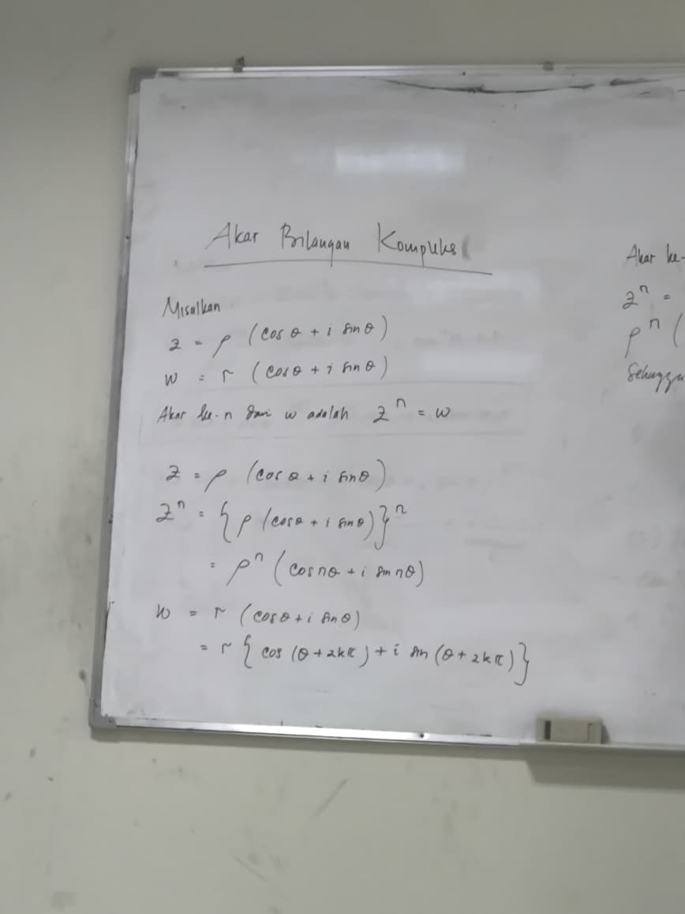
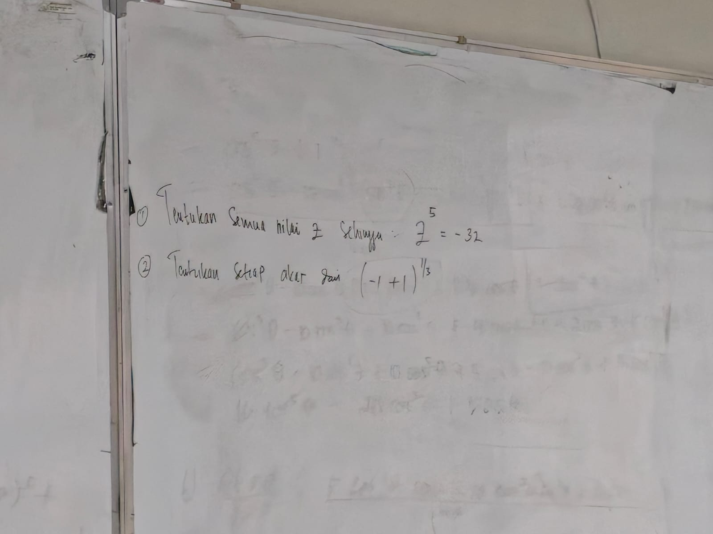

⚠️ Catatan Khusus Dosen Terkait Ujian Tengah Semester (UTS)
Pada pertemuan ini, Ibu Vepi menegaskan bahwa latihan soal yang diberikan di papan tulis diambil langsung dari soal riil UTS tahun sebelumnya. UTS Analisis Kompleks akan dilaksanakan pada hari Senin, 05 Oktober 2026. Mahasiswa wajib menguasai penalaran deduktif aljabar, pembuktian dengan Teorema De Moivre, serta teknik penarikan akar kompleks hingga ke koordinat poligon bidang Argand.
1. Dokumentasi Foto Papan Tulis Kelas


2. Pembuktian Identitas Trigonometri Sudut Majemuk via De Moivre
Sebelum masuk ke materi akar, perkuliahan diawali dengan membuktikan identitas trigonometri tingkat lanjut menggunakan Teorema De Moivre: $(\cos\theta + i\sin\theta)^n = \cos(n\theta) + i\sin(n\theta)$.
Soal 1: Buktikan bahwa $\cos(5\theta) = 16\cos^5(\theta) - 20\cos^3(\theta) + 5\cos(\theta)$
Berdasarkan rumus De Moivre untuk $n = 5$:
Maka $\cos(5\theta)$ diperoleh dengan mengambil bagian real dari ekspansi binomial ruas kiri.
Misalkan $c = \cos\theta$ dan $s = \sin\theta$. Koefisien binomial Pascal $n=5$ adalah $1, 5, 10, 10, 5, 1$:
Hitung perpangkatan unit imajiner $i$ ($i^2 = -1, i^3 = -i, i^4 = 1, i^5 = i$):
Kelompokkan bagian real dan imajiner:
Karena kita mencari $\cos(5\theta)$, ambil bagian yang tidak memuat $i$:
Karena ruas kanan hanya berupa fungsi kosinus, ganti $s^2 = 1 - c^2$ dan $s^4 = (1 - c^2)^2 = 1 - 2c^2 + c^4$:
Jabarkan perkalian distributif:
- Derajat 5: $c^5 + 10c^5 + 5c^5 = 16c^5$
- Derajat 3: $-10c^3 - 10c^3 = -20c^3$
- Derajat 1: $+5c$
Soal 2: Buktikan bahwa $\frac{\sin(5\theta)}{\sin(\theta)} = 16\cos^4(\theta) - 12\cos^2(\theta) + 1$ (untuk $\sin\theta \neq 0$)
Dari ekspansi binomial di atas, koefisien imajiner menyatakan nilai $\sin(5\theta)$:
Faktorkan $s$ keluar dari ketiga suku:
Bagi dengan $\sin\theta$ untuk $\sin\theta \neq 0$:
Kelompokkan suku sejenis:
- Suku derajat 4: $5c^4 + 10c^4 + 1c^4 = 16c^4$
- Suku derajat 2: $-10c^2 - 2c^2 = -12c^2$
- Konstanta: $+1$
3. Teorema Penarikan Akar Bilangan Kompleks ($z^n = w$)
Penurunan rumus di papan tulis Bu Vepi bermula dari definisi formal akar kompleks:
Definisi & Pemisalan Variabel Dosen
Bilangan $z$ disebut sebagai akar ke-$n$ dari $w$ jika memenuhi relasi:
Misalkan bentuk polar masing-masing variabel:
- Akar yang dicari: $z = \rho(\cos\phi + i\sin\phi)$ dengan modulus $\rho \ge 0$.
- Bilangan yang diakarkan: $w = r(\cos\theta + i\sin\theta)$ dengan modulus $r \ge 0$.
- Pangkatkan $z$ dengan $n$ (De Moivre):
$$z^n = [\rho(\cos\phi + i\sin\phi)]^n = \rho^n(\cos n\phi + i\sin n\phi)$$
- Nyatakan $w$ dalam bentuk sudut periodik $2k\pi$:
Karena putaran $2\pi$ kembali ke posisi yang sama di koordinat kutub:
$$w = r[\cos(\theta + 2k\pi) + i\sin(\theta + 2k\pi)], \quad k \in \mathbb{Z}$$Penting: Tanpa penambahan $2k\pi$, pembagian sudut oleh $n$ hanya akan menghasilkan 1 akar. Penambahan $2k\pi$ inilah yang membongkar seluruh $n$ akar unik.
- Samakan Kedua Ruas ($z^n = w$):
$$\rho^n(\cos n\phi + i\sin n\phi) = r[\cos(\theta + 2k\pi) + i\sin(\theta + 2k\pi)]$$
Samakan modulus dan argumen secara terpisah:
$$\rho^n = r \implies \rho = \sqrt[n]{r}$$$$n\phi = \theta + 2k\pi \implies \phi_k = \frac{\theta + 2k\pi}{n}$$ - Batasan Nilai $k \in \{0, 1, 2, \dots, n-1\}$:
Ketika $k = n$, sudut $\phi_n = \frac{\theta + 2n\pi}{n} = \frac{\theta}{n} + 2\pi = \phi_0 + 2\pi$, yang berputar kembali tepat ke posisi $z_0$. Oleh karena itu, terdapat tepat $n$ buah akar berbeda untuk $k = 0, 1, 2, \dots, n-1$.
Formula Baku Penarikan Akar Kompleks
Sifat Geometris Akar di Bidang Argand
- Satu Lingkaran: Semua titik akar berjarak konstan $R = \sqrt[n]{r}$ dari titik asal $(0,0)$.
- Beda Sudut Konstan: Jarak sudut antara dua akar bersebelahan selalu sebesar $\Delta\phi = \frac{360^\circ}{n}$ (atau $\frac{2\pi}{n}$ radian).
- Poligon Beraturan: Jika seluruh $n$ titik akar dihubungkan, terbentuk poligon segi-$n$ beraturan (segitiga sama sisi untuk $n=3$, persegi untuk $n=4$, pentagon untuk $n=5$).
4. Bedah Tuntas Dua Soal UTS Tahun Lalu
Soal UTS 1: Tentukan semua nilai $z$ sehingga $z^5 = -32$
Diketahui $z^5 = -32 \implies n = 5$ dan $w = -32 + 0i$.
- Modulus $w$: $r = |-32| = 32$.
- Argumen $w$: Titik $(-32, 0)$ berada di sumbu real negatif, sehingga $\theta = \pi = 180^\circ$.
- Bentuk polar: $w = 32[\cos(\pi + 2k\pi) + i\sin(\pi + 2k\pi)]$.
- Modulus akar: $\rho = \sqrt[5]{32} = 2$.
- Rumus sudut: $\phi_k = \frac{\pi + 2k\pi}{5} = \frac{(2k + 1)\pi}{5}$ untuk $k = 0, 1, 2, 3, 4$.
- Beda sudut antar-akar: $\frac{360^\circ}{5} = 72^\circ$.
- $k = 0$: $\phi_0 = \frac{\pi}{5} = 36^\circ \implies \mathbf{z_0 = 2[\cos(36^\circ) + i\sin(36^\circ)]}$
- $k = 1$: $\phi_1 = \frac{3\pi}{5} = 108^\circ \implies \mathbf{z_1 = 2[\cos(108^\circ) + i\sin(108^\circ)]}$
- $k = 2$: $\phi_2 = \frac{5\pi}{5} = 180^\circ \implies z_2 = 2[\cos(180^\circ) + i\sin(180^\circ)] = 2(-1) = \mathbf{-2}$
(Cek uji balik: $(-2)^5 = -32 \checkmark$) - $k = 3$: $\phi_3 = \frac{7\pi}{5} = 252^\circ \implies \mathbf{z_3 = 2[\cos(252^\circ) + i\sin(252^\circ)]}$
- $k = 4$: $\phi_4 = \frac{9\pi}{5} = 324^\circ \implies \mathbf{z_4 = 2[\cos(324^\circ) + i\sin(324^\circ)]}$
Bentuk Geometri: Membentuk pentagon beraturan berjari-jari 2 pada bidang Argand.
Soal UTS 2: Tentukan setiap akar dari $(-1 + i)^{1/3}$
Persamaan: $z^3 = -1 + i \implies n = 3$ dan $w = -1 + i$.
- Modulus $w$: $r = \sqrt{(-1)^2 + 1^2} = \sqrt{2} = 2^{1/2}$.
- Argumen $w$: Titik $(-1, 1)$ berada di Kuadran II ($x < 0, y > 0$).
Sudut acuan: $\tan\alpha = \left|\frac{1}{-1}\right| = 1 \implies \alpha = 45^\circ$.
Argumen utama: $\theta = 180^\circ - 45^\circ = 135^\circ = \frac{3\pi}{4}$. - Bentuk polar: $w = \sqrt{2}\left[\cos\left(\frac{3\pi}{4} + 2k\pi\right) + i\sin\left(\frac{3\pi}{4} + 2k\pi\right)\right]$.
- Modulus akar: $\rho = \sqrt[3]{\sqrt{2}} = \sqrt[3]{2^{1/2}} = 2^{1/6} = \sqrt[6]{2} \approx 1{,}1225$.
- Rumus sudut: $\phi_k = \frac{\frac{3\pi}{4} + 2k\pi}{3} = \frac{3\pi + 8k\pi}{12} = \frac{(3 + 8k)\pi}{12}$ untuk $k = 0, 1, 2$.
- Beda sudut antar-akar: $\frac{360^\circ}{3} = 120^\circ$ (atau $\frac{8\pi}{12}$).
- $k = 0$:
$\phi_0 = \frac{3\pi}{12} = \frac{\pi}{4} = 45^\circ$
$\mathbf{z_0 = \sqrt[6]{2}[\cos(45^\circ) + i\sin(45^\circ)]}$
Bentuk aljabar: $2^{1/6}\left(\frac{1}{\sqrt{2}} + i\frac{1}{\sqrt{2}}\right) = 2^{-1/3}(1 + i) = \mathbf{\frac{1 + i}{\sqrt[3]{2}}}$ - $k = 1$:
$\phi_1 = \frac{(3 + 8)\pi}{12} = \frac{11\pi}{12} = 165^\circ \quad (45^\circ + 120^\circ)$
$\mathbf{z_1 = \sqrt[6]{2}[\cos(165^\circ) + i\sin(165^\circ)]}$ - $k = 2$:
$\phi_2 = \frac{(3 + 16)\pi}{12} = \frac{19\pi}{12} = 285^\circ \quad (165^\circ + 120^\circ)$
$\mathbf{z_2 = \sqrt[6]{2}[\cos(285^\circ) + i\sin(285^\circ)]}$
Bentuk Geometri: Ketiga akar membentuk segitiga sama sisi pada bidang Argand.
5. Ringkasan Materi Lengkap UTS (Pertemuan 01 s.d. 07)
| Pertemuan | Topik Utama | Formula Kunci & Kompetensi Ujian |
|---|---|---|
| P03 | Sistem Bilangan Kompleks & Aljabar Dasar | Definisi $z = a + bi$; penjumlahan aljabar; pembagian dengan mengalikan sekawan penyebut $\frac{z_1}{z_2} = \frac{z_1 \bar{z}_2}{|z_2|^2}$. |
| P04 | Sifat Operasi Dasar & Modulus | Sifat ketertutupan hingga invers aljabar; pembuktian konjugat ganda $\overline{(\bar{z})} = z$; identitas $|z|^2 = z\bar{z}$; pertidaksamaan segitiga $\|z_1| - |z_2\| \le |z_1 \pm z_2| \le |z_1| + |z_2|$. |
| P05 | Geometri Vektor & Bentuk Polar | Dot product $z_1 \cdot z_2 = x_1 x_2 + y_1 y_2$ dan cross product $z_1 \times z_2 = x_1 y_2 - x_2 y_1$; aturan 4 tahap argumen sadar kuadran $\text{atan2}(y, x)$; bentuk polar $z = r(\cos\theta + i\sin\theta)$. |
| P06 | Rumus Euler, Perkalian & Pembagian Polar | Derivasi deret Taylor $e^{i\theta} = \cos\theta + i\sin\theta$; teorema perkalian polar $z_1 z_2 = r_1 r_2 \, e^{i(\theta_1 + \theta_2)}$; teorema pembagian polar $\frac{z_1}{z_2} = \frac{r_1}{r_2} \, e^{i(\theta_1 - \theta_2)}$. |
| P07 | De Moivre & Teorema Penarikan Akar | Penurunan identitas sudut ganda dengan De Moivre $(\cos\theta + i\sin\theta)^n$; rumus penarikan $n$ akar $z_k = \sqrt[n]{r}\left[\cos\left(\frac{\theta+2k\pi}{n}\right) + i\sin\left(\frac{\theta+2k\pi}{n}\right)\right]$; keteraturan poligon segi-$n$ di bidang Argand. |
6. Latihan Mandiri Persiapan UTS
- Latihan De Moivre Pangkat 4: Buktikan dengan Teorema De Moivre bahwa $\cos(4\theta) = 8\cos^4(\theta) - 8\cos^2(\theta) + 1$.
- Latihan Akar Satuan (Roots of Unity): Tentukan seluruh akar pangkat 4 dari bilangan $z^4 = 1$. Buktikan bahwa keempat akar membentuk persegi di bidang Argand dengan koordinat $\{1, i, -1, -i\}$.
- Latihan Akar Kompleks Imajiner Murni: Tentukan ketiga akar dari $z^3 = 8i$. Gambarkan letak ketiga sudutnya pada lingkaran berjari-jari 2.